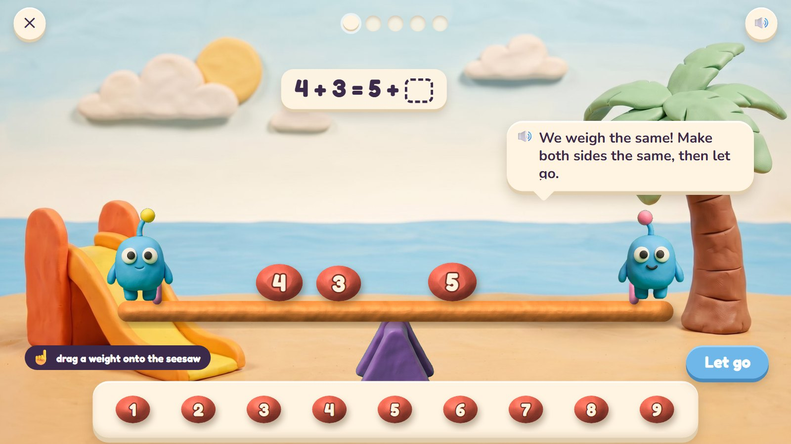
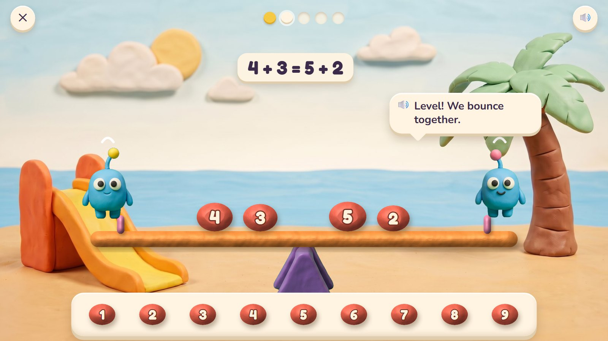
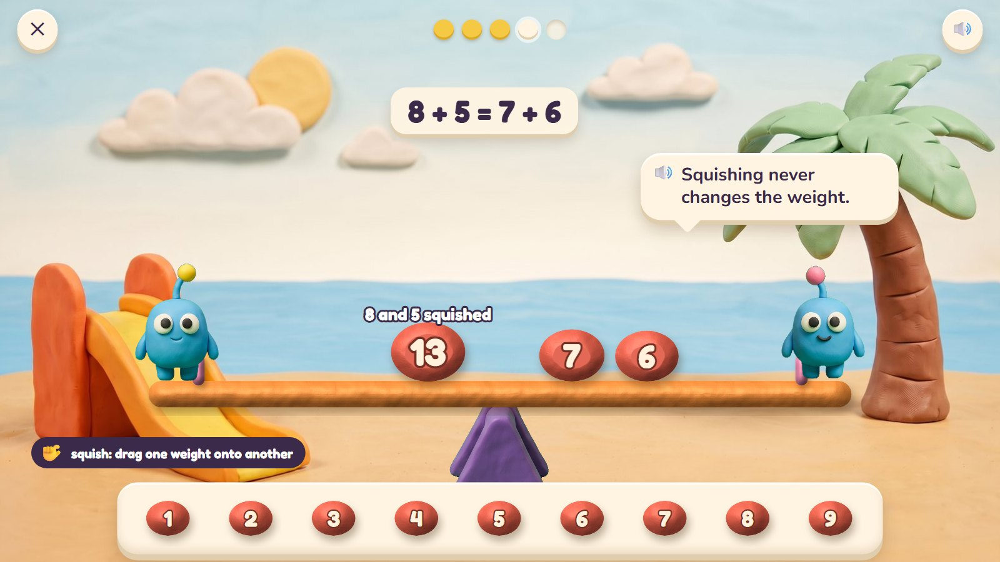
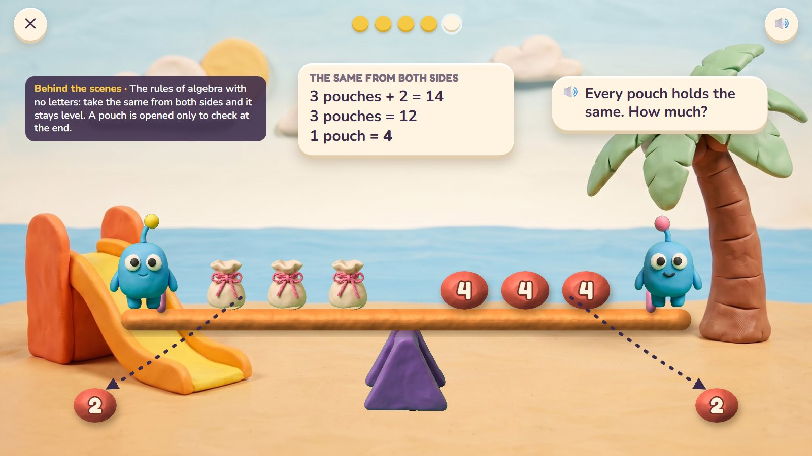
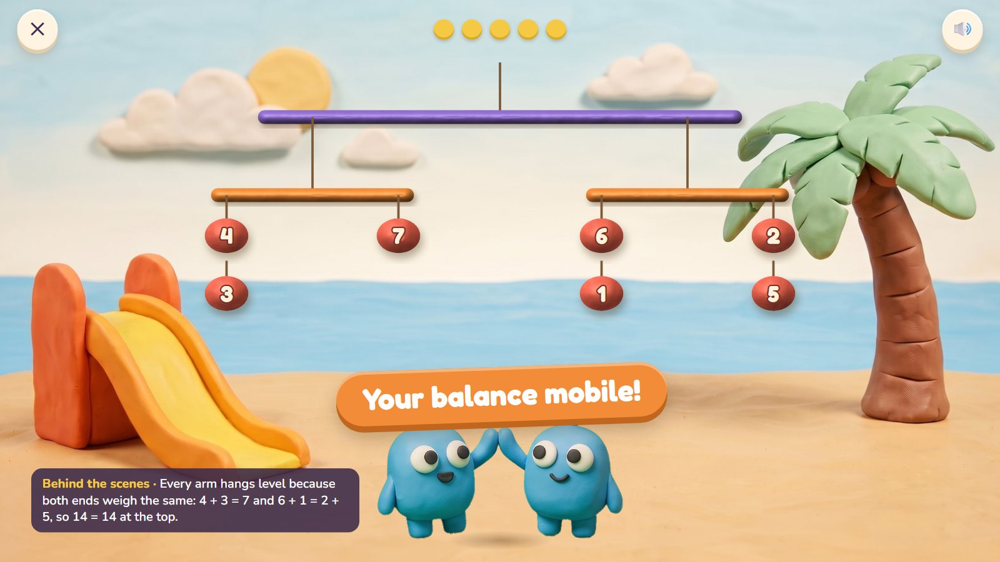

Seesaw Twins
Bim and Bam are twins, so they weigh exactly the same, and only the clay weights decide which way the seesaw tips. The child adds, squishes and splits weights until both sides are the same, then lets go. If the sides match, the twins bounce together. Squishing two weights into one never changes the balance: that is what "=" really means.
Grades 1–3 · ages 6–9 host: Bim and Bam move: squish together, pinch apart, let go
The maths: "=" means "the same as": balance sums (8 + 5 = ? + 6), find missing numbers, and later solve mystery pouches (3 pouches + 2 = 14). One activity is five rounds, about two minutes. With one finger: drag a weight; tap a weight and choose how to split it; the Let go button.
🎉 The fun
The seesaw really tips; the twin on the light side floats up giggling; squishing clay together is satisfying.
🎥 The view
Fixed.
🎆 The finale
The five balances hang together from the pier as a mobile and sway, every arm level (3 seconds).
Six moments

1Twins weigh the same
Bim and Bam sit at the two ends. On the left 4 and 3, on the right 5 and an empty space. The seesaw is held level until the child lets go.
🔊 We weigh the same! Make both sides the same, then let go.
Only the clay weights decide. The weights are lumps of clay, a little bigger for bigger numbers.

2Level!
The child put 2 on the right and pressed Let go. The seesaw stays level and the twins bounce together.
🔊 Level! We bounce together.
The sum is written after the test: 4 + 3 = 5 + 2.

3A wrong try
8 + 5 = ? + 6. The child put 13 on the right (the answer to 8 + 5). The heavy side goes down and Bim rises into the air.
🔊 Whee, I'm up high! Your side is heavier.
Tipping is information, not a mistake. Many children read "=" as "the answer comes next"; the seesaw shows it means "the same as". The 13 stays until the child changes it.

4Squish to see
The child squished 8 and 5 into one lump of 13: the seesaw did not move. On the right, 7 and 6 now balance it.
🔊 Squishing never changes the weight.
Joining two weights keeps the balance, which is why 8 + 5 and 13 are the same.

5Mystery pouches
Ages 8–9: three pouches and 2 balance 14, and every pouch holds the same. The child takes 2 off both sides, then splits 12 into three equal lumps: one pouch is 4.
🔊 Every pouch holds the same. How much?
The rules of algebra with no letters: do the same to both sides and it stays level. A pouch opens only at the end, to check.

6The mobile
The balances hang together from the pier as a mobile, every arm level. Bim and Bam high-five.
🔊 Your balance mobile!
Mock-ups: Gemini's clay pictures (scenes, friends, props) with the maths drawn by code in the same clay look, the way the app would draw it, so every count and size is exact.
What is asked, for one age
- 4 + 3 = 5 + ? (2)
- 8 + 5 = ? + 6 (7)
- 6 + 6 = 9 + ? (3)
- 12 on one side: two equal weights on the other (6 + 6)
- 10 + 4 = 7 + ? (7)
One activity card. The same activity serves other ages with other numbers:
| Age | What changes |
|---|---|
| 6 | Sums to 10; weights show dots and numbers; one missing number. |
| 7 | To 20; the "= means the same" rounds. |
| 8–9 | To 100 and the times tables; mystery pouches (one kind of pouch); "do the same to both sides". |
Wrong answers we expect, and what happens
| Mistake | Looks like | What happens (never red, never "wrong") |
|---|---|---|
| "=" as "the answer comes next" | 13 for 8 + 5 = ? + 6 | the seesaw tips and Bim floats up |
| Adding to one side only | puts more on the heavy side | the tip shows which side is heavier |
| Unequal "equal weights" | 5 and 7 for 12 in two equal lumps | the twins hold the two lumps side by side |
| Guessing pouches | wants to open a pouch first | pouches stay shut until the child presses Check |
What it needs
- The playground scene, drawn once
- The stand (cut-out); the plank, weights and pouch numbers drawn by code; the plank tips by code
- Bim and Bam in three poses
- Voice: numbers to 100, "heavier", "level", four tips
Test robot: Works out the missing number from the question, places it, lets go and checks the seesaw is level. Once it places the sum (13), to check the tip.
One question
← Back to Clay Bay · Poke Pals · Pull-a-Shape · Critter Maker · Seesaw Twins · Parade Squares · Fair Slices · Zoom Dig